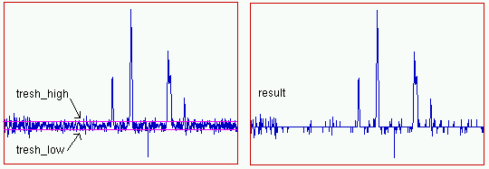
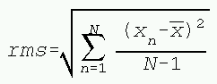

Copy current parameters from one block to another one. block is block1, block2, block3 or block4. <from block> Source of data. <to block> Destination of data.
Set spectral width. <value> Spectral width in Hz. <block> Set the spectral width for this block. <dimension> For multi dimensional files: set the spectral width for this dimension.
Example 1:
SW:2 5000Set the spectral width in dimension 2 to 5000 Example 2:
BLOCK2:SW 2500Set the spectral width in block 2 for the current dimension to 2500
? {<block>:}SW{:<dimension>}
Return the current value of SW
Set spectrometer frequency <value> Spectrometer frequency in MHz. <block> Set for this block. <dimension> For multi dimensional files: set for this dimension.
? {<block>:}SW{:<dimension>}
Return the spectrometer frequency
Example:
$frequency = ? SF
Reference channel at 0 ppm = xr * aref + bref - 1
Where aref = spectrum_size/td and bref = store_start of a previous write operation.
Set reference channel number for ppm calibration. <channel> The channel number that has ppm value 0. <block> Set for this block. <dimension> For multi dimensional files: set for this dimension.
{<block>:}XR{:<dimension>}
Return the current reference channel.
Set reference AREF for ppm calibration. <value> AREF value. <block> Set for this block. <dimension> For multi dimensional files: set for this dimension.
{<block>:}AREF{:<dimension>}
Return the current value of AREF.
Set reference BREF for ppm calibration. <value> BREF value. <block> Set for this block. <dimension> For multi dimensional files: set for this dimension.
{<block>:}BREF{:<dimension>}
Return the current value of BREF.
Set size of time domain <size> The size in data points. <block> Set for this block. <dimension> For multi dimensional files: set for this dimension.
?{<block>:}TD{:<dimension>}
Return size of time domain
Set array size. For one block, the size for all arrays is the same. <size> The size in data points. <block> Set for this block.
? {<block>:}SI
Get current array size
Set data size. This is the original size, not modified by processing operations. <size> The size in data points. <block> Set for this block.
? {<block>:}SIZEN
Get current data size
Get the number of dimensions of the currently open file.<block> Get for this block.
Set store mode for new file. <mode> can be 1 for real mode or 2 for complex mode. If mode is real, only the real data are written to disk, if mode is complex both real and imaginary data are written. <block> Set for this block. <dimension> For multi dimensional files: set for this dimension.
?{<block>:}SM{:<dimension>}
Return store mode.
Set the number of dsp-related prepended points to <correction> for a Bruker DMX spectrum. <block> Set for this block. <dimension> For multi dimensional files: set for this dimension.
?{<block>:}DSPSHIFT{:<dimension>}
Return dsp shift.
Set isspec flag. <mode> can be 0 for FID or 1 for spectrum. Usually for a new file this parameter is 0. When a Fourier transform is applied, this value changes to 1. This flag is used to set the correct unit with the axis for 1D/2D plots. <block> Set for this block. <dimension> For multi dimensional files: set for this dimension.
?{<block>:}ISSPEC{:<dimension>}
Return isspec flag.
Open and load parameters from NMR input file
RN { <record number> } {, <record number> } {, <range> }
RN without parameters reads the current record. The order of the record numbers (or offsets) correspond to the directions set with the dr command. Record numbers rnage from 1..file_size_in_that_direction. If <range> is used, it defines which data points are read from the file.
For example:
RN [41..100]reads elements 41..100 form the input file. The elements are stored in positions 1..60 of the real/complex array(s).
Example 2:
RTR
Example 1:
Close the current NMR input file. This is done automatically when a new file is opened.
otrunc { <float_type> , } { <tresh_high> , <tresh_level> , <tresh_low> }Data reduction is useful for large 3D files. Two types of data reduction can be used. The first uses floats with less than 4 bytes and the second removes all data below a certain treshold. The command otrunc should be used just before a new output file will be opened.
Float reduction:
The change of <float_type> can reduce the float size from the normal 4 bytes to 3 bytes ( float3 ) or 2 bytes ( float2 ). In practice, this gives only a very small error in each data point.
Example 1:
otrunc float2Low intensity data removal:
wopen "ladidafile"The baseline noise can be replaced by zero's, and only the number of zero's (and not the zero's themselves) are stored in the file. In this case <tresh_high> gives the positive treshold level, that is, the lowest positive level that still is saved. Data with positive intensities below this line are thrown away. In the same manner, <tresh_low> marks the treshold for the negative levels. The parameter <tresh_level> gives an optional offset, which is used when data are restored. Usually, this value is 0.
Example 2:
otrunc 2e3, 0, -2e3Both methods can be combined.
Example 3:otrunc float2, 3e4, 100.0, -4e4
Open NMR outputfile for writing. Wopen means open a new file and delete any file with the same name that already exists. Wopen is used when the results of a processing step are written to disk. An open input file must be present. When no ranges are given, it is assumed that the sizes of the outputfile correspond to those of the currently open inputfile. The ranges are set accordingly. Wreopen means reopen an existing NMR file for writing. Wreopen is used when records have to be modified in an existing file. Ranges are taken from the existing ouput file, and can not be modified. <range1> corresponds to direction 1, etc. , and are independent from the access order set with the dr command.
Example 1:
dr 1, 2 # set direction to 1The file "myfilename" is opened as a new file with default size in direction 1, and a size of 1 in direction 2. This corresponds to record 7 written as a 1D file.
wopen "myfilename", [..], [7]
Example 2:
dr 2, 1Suppose that this is a 2D file with size 512 (complex) in direction 1 and size is 1024 in direction 2. The wopen command sets the size in direction 1 of the output file to 256 (complex). This means that the sorted modifier lets $i loop from 1..256 and from 513..768 (real + imaginary).
wopen "myfilename", [1..256]
for $i in sorted [..] do
rn $i
sn 2
ft 1
rw
done
Note that the write command rw is given without
arguments. This is done to write the records from 1..512. If the command
rw $i should have been used, records would have been written from
1.256 and from 513..768.
Open NMR outputfile <filename> for writing. Create opens a new file and initializes the parameters. Create is used when a new file is prepared from a Bruker or Varian file. The optional parameter (s) <acquisition filename> define one or more file(s) with ASCII acquisition parameters, for example a Bruker acqu file. These parameters can be listed later with the AQ command. Ranges need to be specified.
Example 1:
dr 1, 2 # set direction to 1The file "myfilename" is opened as a new file with size 512 in direction 1, and size of 1024 in direction 2.
wopen "myfilename", [1..512], [1..1024]
Example 2:
Example, create a 4D file
Write the current record to the file that was opened with wopen, wreopen, create. If <key1> and <key2> are not given, the record is written to the default position in the output file. Use the keys only to store the record deliberately at a different position in the output file. See, note.
Close the current NMR output file Do not forget this, or not all
data will be saved.
Read <array> from the file <filename>. The RD an WR commands are intended to store data temporarily on disk. When data is read with RD, no parameters are read, and the record size is not updated. Thus this function is useful only to read data into an already open file. With this single command, the file is opened, the data read, and the file is closed again.
Example 1:
Read the file "fileondisk" in Buffer B. Start reading at element 20 and stop reading at element 200, and store the data at the corresponding positions in Buffer B.
RD @B[20..200], "fileondisk"
Example 2:
Read the file "fileondisk". If the file contains complex data, the real data are stored in array @R and the imaginary data are stored in array @I. If the file contains only real data, these data are read and the array @I is not modified. All full arrays stored on disk are read, no matter wat the current array size of @C is.
RD @C, "fileondisk"
Write <array> to the file <filename>. One option is to store an array temporarily on disk. Can also be used to save one record from a 2D or 3D file.
Example:
WR @A[20..200], "fileondisk"Write Buffer A to he file "fileondisk". Start reading at element 20 and stop reading at element 200. The data is stored from 1..181 in the file.
Set the directions (=access) for a multi dimensional NMR experiment.
The first direction gives the processing direction, and this is also the
direction that will be plotted along the x axis in a 2D plot. The second direction
will be plotted along the y axis. The third direction gives the plane offset
and the fourth the cube offset., etc. It is not necessary to specify the
last direction, as this can be easily calculated from the dimension of the
file.
Example for a 3D file:
The example above is equivalent to:
Mode can consists of one,two or three characters. The first can be F (forward prediction), B (backward prediction) or G (gap prediction). The others can be M, and in that case the toggle 'move roots' is set to true, and/or R which stands for replace spectrum when HSVD is used. <num roots> The number of roots (frequencies) to predict. <future size> The number of data points to predict. For forward prediction, this size is added to the data. For backward prediction, the new data are written inside the old data. For gap prediction, use instead. <gap range> Only for gap prediction. The first and the last point of the gap in the original data. <range> The total number of points used for the prediction.
Example 1:
HSVD "FMR", 32, 128Do HSVD forward prediction with 32 roots, and predict 128 data points. Reflect roots and replace spectrum by predited data.
Example 2:
LPC "B", 24, 8, [5..]Do backward prediction with 24 roots. Start at point 5 and predict 8 points (5..12). The prediction is started from point 13.
Example 3:
LPC "G", 12, [15..16]Predict the points 15 and 16 Example 4:
LPC "G", 12, [15..16], [1..1024]Predict the points 15 and 16, and use only the points inside [1..1024] for this prediction.
Hamming window. <range> defines which data elements are modified.
Hanning window. <range> defines which data elements are modified.
Sine Bell.<shift> Typical values: [3..10] for 2D NOE, 2D HOHAHA. [1000] pure sine, for absolute value COSY <range> defines which data elements are modified.
Squared sine bell <shift> typical values: [3..10] for 2D NOE, 2D HOHAHA. [1000] pure sine, for absolute value COSY <range> defines which data elements are modified.
Eponential multiplication <line broadening> is the line broadening in Hz. <range> defines which data elements are modified.Example:
EM 2, [1..2048]
Convolution difference
<line broadening> is the line broadening in Hz. <range>
defines which data elements are modified.
Kaiser
window. <theta> typical values: [1.5..3] <range>
defines which data elements are modified.
Lorentz-gauss transformation<linewidth> the linewidth (in Hz). Sw is the spectral width in Hz. <fraction> fraction of the data size. <range> defines which data elements are modified.
Trapezian multiplication This window function has the form: <range> defines which data elements are modified.
Use the window function that has been prepared in the window buffer. <range> defines which data elements are modified.Example:
# This is the equivalent of using the HN command
# of course it is MUCH slower
$pi = acos(-1.0) # Get the value of pi
$isize = ?si # get the array size
for $i in [1..$isize] do
@w[$i] = 0.5 + 0.5 * cos($pi * $i / $isize)
done
wb # Do window with buffer
Filter large peaks (waterline) from spectrum <power> Filter is of the form cos^<power> <convolution width> 64 seems to be OK. <shift> Number of channels to shift peak to the middle of the spectrum.
Do Fourier transformation
<zerofill>. Zerofill gives the number of zerofill operations performed
on the FID before Fourier transformation. The default value is 0. <mode>
is @R (do on real data), @I (do on imaginary data) or @C
(do on complex data)
Do a discrete Fourier
transform (if the data size is not a power of two). <mode>
is @R (do on real data), @I (do on imaginary data) or @C
(do on complex data)
Do inverse
Fourier transformation. <mode> is @R
(do on real data), @I (do on imaginary data) or @C (do on
complex data)
{<block>}FTSCALE{:<dimension>} <factor>Scale first data point before a Fourier processing step. <factor> is the value by which the first data point is multiplied. <dimension> Processing dimension. <block> Set for this block.
For example:
FTSCALE 0.5
? {<block>:}FTSCALE{:<dimension>}
Returns the value of FTSCALE
Perform phase correction with <phase0>, <phase1> and <i0>. Previously defined parameters are used when not given with this command. Parameters can be determined interactively. <phase0> Frequency independent phase <phase1> Frequency dependent phase <i0> Frequency independent position
Set the frequecy independent phase. <phase0> is the value of the frequecy independent phase. <dimension> Processing dimension. <block> Set for this block.
? {<block>:}PA{:<dimension>}
Returns the value of PA
Set the frequecy dependent phase. <phase1> is the value of the frequecy dependent phase. <dimension> Processing dimension. <block> Set for this block.
? {<block>:}PB{:<dimension>}
Returns the value of PB
Set the frequency independent position. <i0> is the frequency independent position in channel numbers. <dimension> Processing dimension. <block> Set for this block.
? {<block>:}I0{:<dimension>}
Returns the value of I0
Reset phase parameters. Phase0 = 0, phase1 = 0, and i0 = 1.
Normalize phase parameters. Recalculate the parameters with I0 set to
<i0>. If <i0> is not specified, a value of 1
is assumed. This results in parameters that are not dependent on the size
of the spectrum. Not that the phase parameters are automatically normalized
when a script is created from the parameters.
In frequency domain, restore imaginary data form real data.
The real data are replaced by the absolute value according to (magnitude
calculation)
AV(i) = sqrt(real(i)**2 + imaginary(i)**2)
The real part of the spectrum is replaced by
PS(i) = real(i)**2 + imaginary(i)**2All values are scaled, by multiplication of the reciprocal square root of the biggest peak.
Perform a baseline correction on the current spectrum. The most likely
baseline of the current spectrum is determined and a baseline correction
function is fitted to this baseline. This fitted function is then subtracted
from the spectrum. A number of functions can be used for this fit. If a windowed
fit is used, only the regions that are defined in this 'window' are used
to determine the baseline. However, the correction is applied on the whole
spectrum. The window must be defined in buffer A. All non-zero elements of
this buffer define positions that should be fitted. <mode> gives
the type of baseline correction
function. It can have the following values:
poly - polynomial
polyw - windowed polynomial
sine - sine
sinew - windowed sine
cosine - cosine
cosinew - windowed cosine
sincos - sine + cosine
sincosw - windowed sine + cosine
tabl - table fit
tablw - windowed table fit
spline - automatic spline
splinew - windowed automatic spline
When <mode> is tabl or tablw, a function defined in buffer B is used for the fit. <terms> sets the number of polynomial terms if <mode> = poly or polyw. Usually 4 or 5. <terms> sets the maximum sine or cosine frequency, if <mode> = sine, sinew, cosine, cosinew, sincos or sincosw. For these functions, the argument <terms2> can also be used. In this case <terms> = the minimum and <terms2> the maximum frequency. When <mode> is spline or splinew, <terms> set the number of control points to <terms>+1. If <range> is defined the correction is only applied on this region. If <range2> is defined, the baseline is fitted in two parts (see baseline correction, waterline). In this case <range> is baseline_start..waterline-width/2 and <range2> is composed of waterline+width/2..baseline_end.
Example:
BC spline, 20
Example:
BC poly, 5, [1..4070], [4080..]
Read spline control points from the file <filename>, calculate a trigonometric spline function through these points and store the result in buffer B. The file contains points that are interactively generated with the Spline module, and that are considered baseline points. By subtracting buffer B from the real data, a baseline correction is performed. Example of a file with spline points:
SPLINE_STARTExample of a spline baseline correction:
SPLINE_EXTERPOLATING
1 134450.500000 0
1 134450.500000 0
1 134450.500000 0
1 134450.500000 0
201 85581.890625 0
803 -4811.260254 0
1471 -100758.687500 0
1952 -120265.203125 0
2139 -101299.953125 0
2460 -106488.789062 0
3181 -17112.298828 0
5199 33165.476562 0
5787 -66912.101562 0
6535 -168316.046875 0
7163 -165597.078125 0
7925 127876.718750 0
8192 228702.140625 0
8192 228702.140625 0
8192 228702.140625 0
SPLINE_STOP
spline read, "spoints.spn"Also a table fit can be used for the spline baseline correction Example:
for $i in sorted [..] do
rn $i
spline calc
@r -= @b
rw
done
spline read "spoints.spn"
spline calc
bc tabl
waterfit <position> , <width>Remove peak from spectrum: <position> gives the position of the peak in points, and <width> gives the optional peak-width (also in points).
Example:
waterfit 512, 0
Example:
%dum = unpack4(@b[11])
println "Date " + %dum[1..2] + "-" + %dum[3..4] + "-19" +
%dum[5..6]
Example:
%fname = unpack6(@b[2])+unpack6(@b[3])+unpack6(@b[4])
println "Filename: " + trim(%fname[1..8]) + "." +
trim(%fname[9..12])
Example:
print "Comment: "
for $i in [17..40] do
print %unpack8(@b[$i])
done
println ""
Example:
# Get size of 1 record
$nsize = unpacki(@b[41])
Example:
$specf = unpackf(@b[78],@b[79])
println "SF " + %specf
Example:
# the filetype is in the 1th byte of integer 12
$filetype = unpackb(@b[12],1)
if $filetype == 7 then
println "Filetype: FTQNMR"
else
if $filetype == 8 then
println "Filetype: DISNxx"
endif
endif
Example:
unpacki @r # Convert 3-byte integers to floatsIn this example, the array with the elements 1,2,3,4,5,6,7,8 is transferred to 1,2,-3,-4,5,6,-7,-8
negstep @r, 4, 2 # At every index '4' negate last '2' data
Convert 3-byte integer to 4-byte integer. The 4th byte is a zero. The number of integers that are converted is determined by the sizes of the input- and output arrays.
unpack0123: 123 -> 0123
unpack3210: 123 -> 3210
unpack0321: 123 -> 0321
unpack1230: 123 -> 1230
Example:
Example:
integral offset <mode>
Set the integral offset correction mode for 2D integration. If <mode> is 1, offset correction will be used. In this case, the intensities of the border of the integration box will be used as offset, and subtracted from the integral. If <mode> is 0, offset correction will not be applied.
Example:
<numpeaks> = integral ( <filename> )
Read a file with peak definitions into the current spectrum. <numpeaks>
gives the number of peaks that have been successfully loaded.
<result> = integral ( <peaknumber> )
Integrate the peak with <peaknumber> .
Example:
# First, read and calculate all peaks
#
# the first filename from the list
#
%file = token %filenames, ";"
$numfiles = 0
while %file != "" do
ropen %file
dr 2, 1
co 1
if $numfiles == 0 then
#
# read peaks
#
$numpeaks = integral(
%peakfile )
if $numpeaks == 0 then
exit 1
endif
println "numpeaks =
" + %numpeaks
endif
$i = 1
$j = $numfiles * $numpeaks + $i
#
# store peak integrals in array @a
#
while $i <= $numpeaks do
@a[$j] = integral
($i)
println %numfiles +
" " + %i + " " + %(@a[$j])
$i += 1
$j += 1
done
rclose
$numfiles += 1
#
# next filename
#
%file = token ";"
done
#
# produce output in various formats
#
$outfile = open %resultfile, "w"
# For example write peaknumber +
# accending integrals
if $method == 1 then
$i = 1
while $i <= $numpeaks do
$n = 0
#
# peak number
#
fprintf $outfile, "%4d ", $i
#
# write integrals from first to last file
#
while $n < $numfiles do
$j = $n * $numpeaks
+ $i
fprintf $outfile, "%10.5e
", @a[$j]
$n += 1
done
fprintf $outfile, "%s", "\n"
$i += 1
done
else
# ... or write filenumber +
# all its peak integrals
$n = 0
while $n < $numfiles do
#
# file number
#
fprintf $outfile, "%4d ", $n+1
$i = 1
while $i <= $numpeaks do
$j = $n * $numpeaks
+ $i
fprintf $outfile,
"%10.5e ", @a[$j] * ($n+1)
$i += 1
done
fprintf $outfile, "%s", "\n"
$n += 1
done
endif
close $outfile

For an 1D spectrum, it is assumed that the spectrum is present in array @r. The arguments <left> and <right> define the first and last point of that part of the array. For 2D files, the area defined by <left>, <right>, <bottom> and <top>. This part of the spectrum is read from disk.
Example:
<npeaks> = The number of peaks found between <left>
and <right>
<left> = pick from left
<right> = to right (in channel numbers)
<height> = peak pick threshold
<result> = array to store result
Example:
Convert values from one unit (ppm, hertz, channel numbers, seconds) into another. On error, the value is simply returned.
<unit> is the value that should be converted.
<conversion type> is a string of two characters. The first character describes the current unit and the second character describes the converted unit. Valid units are 'p' = ppm, 'h' = hertz, 'c' = channel number and 's' = second. For example "pc" means: convert form ppm to channel numbers.
The optional argument <dimension> uses the parameters from that dimension for the conversion. The default is to use the parameters of the current dimension.
Example, convert ppm to hertz:
Example, convert channel numbers to ppm for dimension 2: